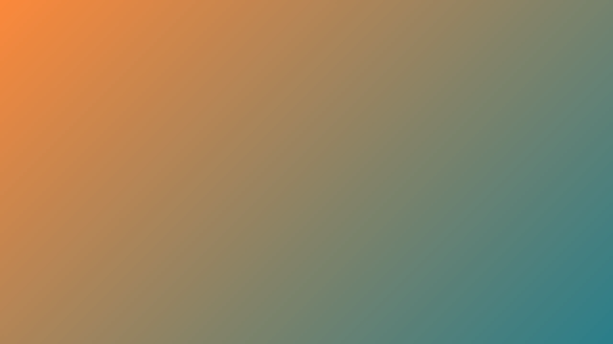

Quando a mente está “barulhenta”, o corpo normalmente já está acelerado...
← Voltar ao Blog
Respiração
Foco
Respiração Transformadora em 3 minutos: estabilize energia e ruído mental
Um protocolo simples para você baixar ruído, organizar foco e começar o dia com mais clareza — sem misticismo e sem drama.
